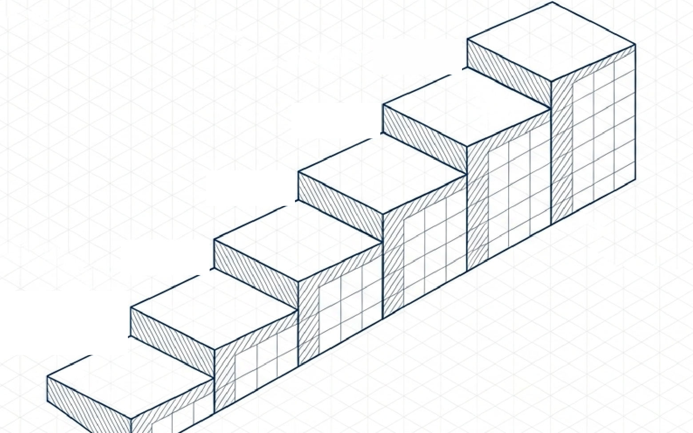

Cómo la responde SEVEN-G
La respuesta, en tres ideas
Un mapa de nueve esferas por tres niveles de ambición (optimizar, aumentar y transformar) muestra dónde está hoy la IA de la compañía y dónde no ha mirado todavía.
El diagnóstico de madurez dice si la organización está preparada para ir a más. Mide siete dimensiones en una escala de 0 a 5. La tecnología en uso no sube la nota: fija el gobierno mínimo que se debe tener.
Con el mapa y la madurez, el consejo fija la ambición y el apetito de riesgo por esfera. Sin un gobierno serio, ir a más solo añade riesgo.

0 · Inexistentecaos o solo POC 1 · Inicial 2 · En desarrollo 3 · Definido 4 · Gestionado 5 · OptimizadotransformaciónVéalo ahora
Dónde verlo y dónde se explica
Cada enlace abre la herramienta, el ejemplo o el documento. Los ejemplos usan una compañía ficticia.
Seguir navegando